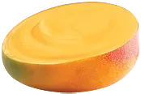
No. 01
Golden Mango
Mangifera solaris
Harvested at peak drowsiness, precisely when the tree itself begins to nap in the afternoon heat.
The Fruit Archive
Est. one sunny afternoon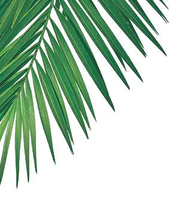
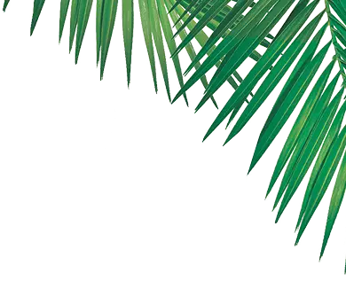
A tiny, wholly unofficial museum of fruit that packs itself. No purchase necessary, no shells harmed, spoons gently encouraged.
Begin the tour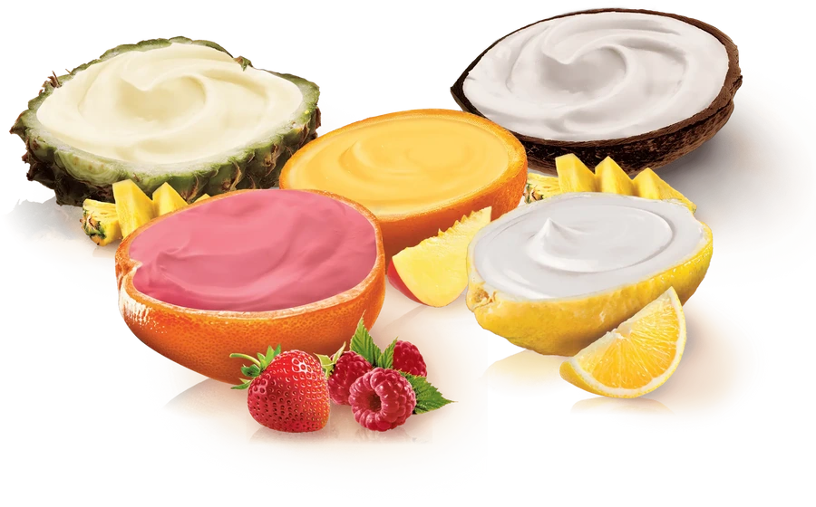
Each entry was gathered by hand, admired at length, and returned to the sun before dinner.

Mangifera solaris
Harvested at peak drowsiness, precisely when the tree itself begins to nap in the afternoon heat.
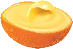
Mangifera passionis
The dramatic cousin. Ripens twice as fast, sighs twice as loudly, and insists on a garnish at all times.
Cocos nimbus
Cracked open to reveal a suspiciously fluffy interior. The Archive maintains this is entirely natural.
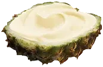
Ananas coronatus
Wears a leafy crown at all hours and flatly refuses to be catalogued without it.
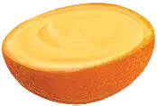
Citrus vesperis
Glows faintly at dusk. Sailors once claimed a single slice was enough to navigate home.
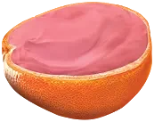
Rubus roseus
Blushes a deeper pink when complimented. Best approached with kind words and a small spoon.
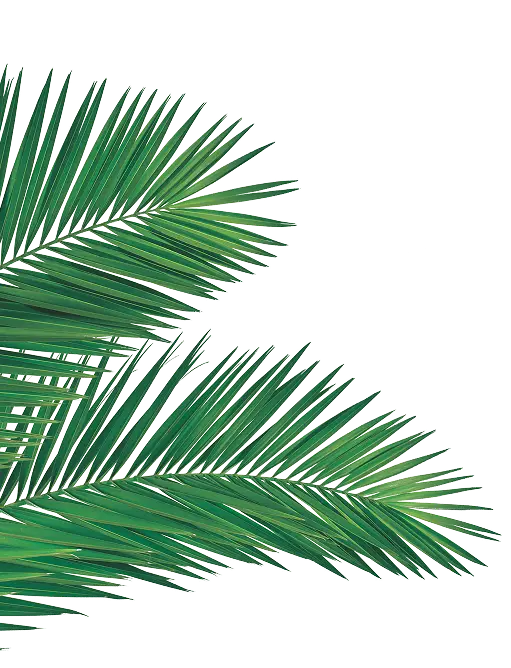
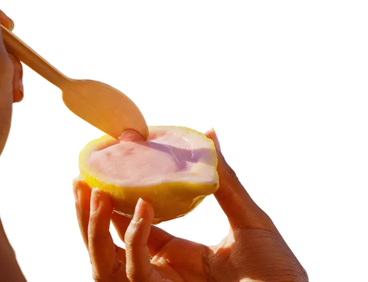
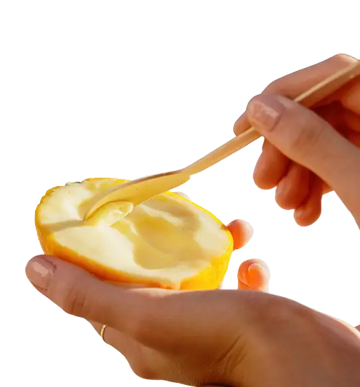
No machine has ever met these specimens. Each shell is cracked, admired, and offered up by a curator who takes the phrase “hands-on” a little too literally.
Ripe specimens favour the highest, laziest branches, where the sun lingers longest. Bring a hat, a notebook, and no particular hurry.
Hold gently and do not squeeze. A well-mannered fruit will open itself when it decides you are trustworthy.
The Archive believes in leaving no peel behind. Every specimen goes back to the earth exactly as generously as it arrived.
Plate IV · the interior, revealed.
The curator insists every specimen be sampled at least once, purely, of course, to confirm it is in fact delicious. Findings so far have been unanimous, and are being double-checked with enthusiasm.
Fig. 12 · the recommended tasting technique: one bowl, one spoon, no witnesses.
Long before cardboard, the fruit worked it all out: a husk here, a peel there, a rind built to travel.
The Archive is, at heart, an appreciation society for this quiet genius, the shell that arrives portioned, sealed, biodegradable, and needlessly beautiful.
Study them a while and the ordinary orange starts to look like the finest packaging ever shipped.
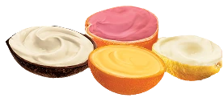
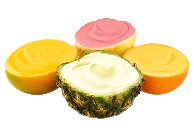
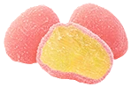
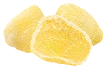
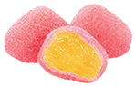